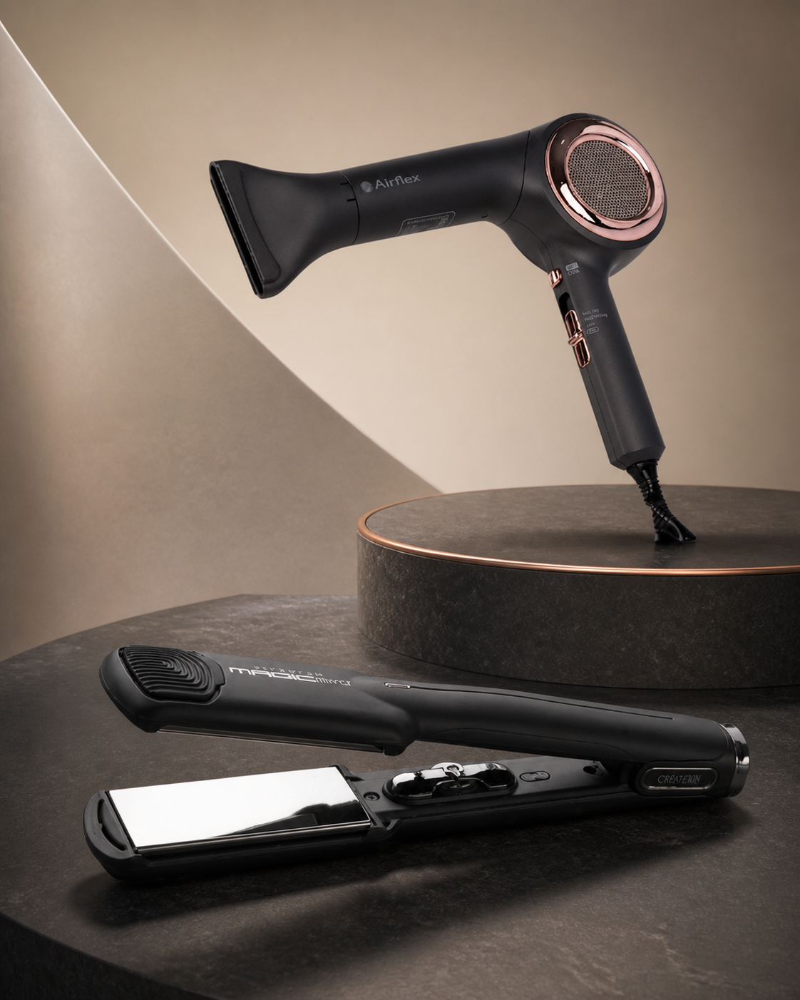

MY STORY · SINCE 1992
아내의 머리카락이
자꾸 끼는 걸 보고,
만들기 시작했습니다.
바쁜 아침, 한 번에 쓱. 머릿결이 부드럽게 정돈되는 도구를 만들겠다는 마음이 온고뷰티의 시작이었습니다.

시작의 장면
출근을 서두르던
어느 아침이었습니다.
맞벌이로 바쁘게 지내던 어느 날, 아내가 출근 준비를 하며 고데기로 머리를 손질하고 있었습니다. 그런데 머리카락이 자꾸 플레이트 사이에 끼었습니다. 한 번에 펴지지도, 원하는 컬이 만들어지지도 않았습니다. 시간은 없는데 같은 부분을 여러 번 손질하며 속상해하는 모습을 곁에서 지켜봤습니다.
그 모습을 보며 생각했습니다. ‘바쁜 아침에 여러 번 애쓰지 않아도, 한 번에 빠르고 부드럽게 머릿결을 정돈할 수는 없을까?’ 그렇게 빠르고 제대로 작동하는 고데기와 매직기를 직접 만들기로 했습니다.
포기하지 않은 연구
머리카락이 끼지 않는
한 번의 손질을 위해.
당시 판매되던 많은 고데기는 세라믹 코팅을 사용했습니다. 하지만 머리카락이 끼고, 원하는 결과를 위해 같은 부분을 여러 번 손질해야 하는 불편함이 있었습니다.
그러던 중 열전도율이 좋고 머리카락이 달라붙거나 끼는 현상을 줄일 수 있는 티타늄 특수 코팅에 주목했습니다. 좋은 코팅만으로는 충분하지 않았습니다. 열을 빠르고 고르게 전달하는 기술도 필요했습니다.
상당한 비용과 수많은 시행착오를 감수하며 연구를 이어갔습니다. 결국 자체 기술로 10초 만에 200℃까지 빠르게 예열되는 기능을 구현했고, 그 과정에서 여러 국내 특허 기술도 만들어냈습니다.
“제가 10년 동안 잘 사용한 제품이라,
이제는 딸에게도 선물했어요.
둘이 함께 정말 잘 쓰고 있습니다.”
한 분의 일상에서 10년을 함께하고, 다음 세대의 아침까지 이어졌다는 말이 오래 마음에 남았습니다. 제품은 판매하는 순간보다 그 뒤의 시간이 더 중요하다는 것을 다시 배웠습니다.
우리의 시간
1992년부터,
더 나은 한 번을 향해.
헤어 도구 제조의 시작
전문 헤어샵과 일반 고객이 믿고 사용할 수 있는 미용 전자기기를 국내에서 만들기 시작했습니다.
- 연구의 시간
티타늄 특수 코팅 연구
머리카락이 끼거나 달라붙는 불편을 줄이기 위해 소재와 구조를 반복해서 시험했습니다.
- 기술의 결실
10초 예열과 국내 특허
10초 만에 200℃까지 도달하는 빠른 예열 기술을 개발하고 여러 특허 기술을 축적했습니다.
- 현재
전문가와 일상에 함께
전문 헤어샵과 일반 고객에게 프리미엄 제품을 선보이며 국내 제조와 A/S까지 직접 책임지고 있습니다.
앞으로의 약속